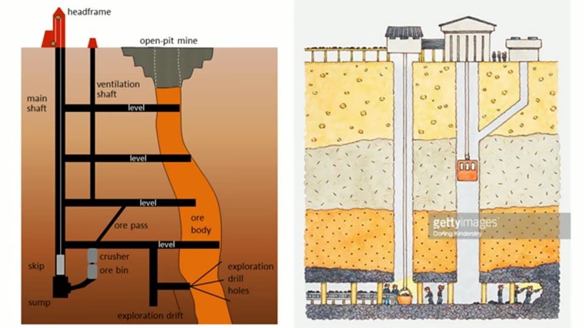
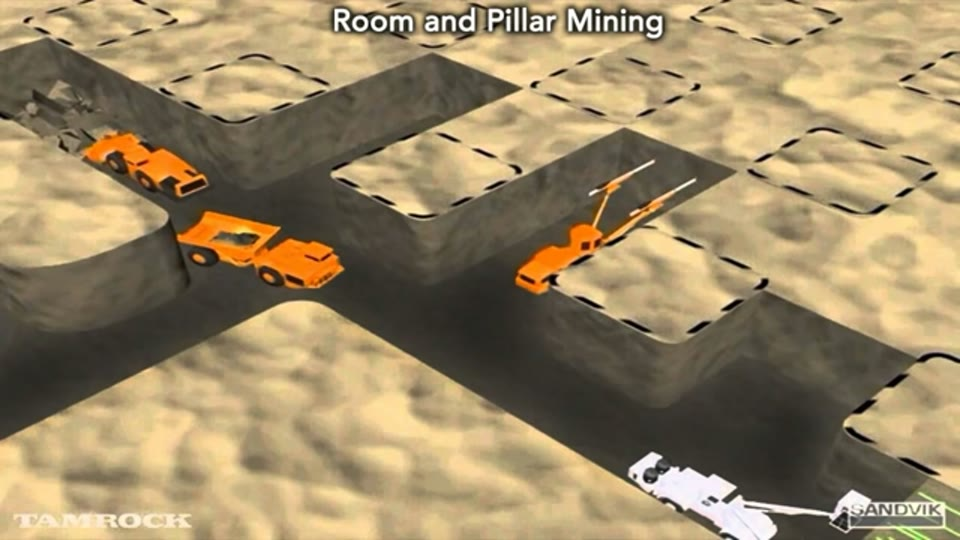
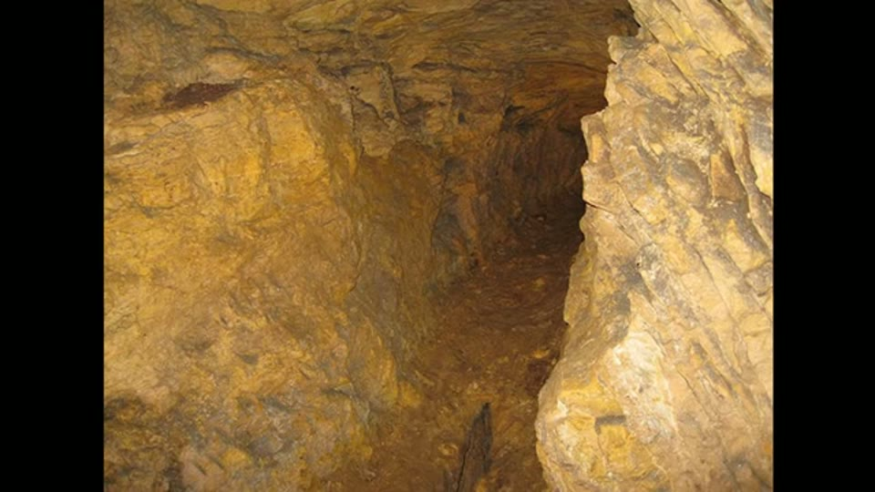

Curious Being
The Osiris Shaft: Part of a Prehistoric Mine from a Lost Civilization?
Tina · 18 min · watch on YouTube · summarised 2026-08-23
The Osiris Shaft is one of several shafts cut deep into the Giza bedrock, and the only one open to visitors 00:03–00:30. She uses it as the accessible sample for a set of structures that are otherwise off limits.
The starting observation
Before the shaft itself, the distinction the argument rests on 00:30–01:56.
Egyptian temples and tombs are covered floor to ceiling in murals and hieroglyphs. A handful of sites are not: the Great Pyramids, the Osireion, and the Giza shafts, all built in a completely different style with no decoration at all, and some carrying tool marks that resemble machine marks. That contrast is why some argue the megalithic structures were not built by dynastic Egyptians but inherited by them and repurposed — reuse of older structures being ordinary practice worldwide.
Her five characteristics of the Osiris Shaft 02:17–02:38:
1. multiple levels with multiple shafts, not aligned with one another 2. the second level has multiple rooms 3. tool marks resembling modern machine marks 4. areas on ceilings that look like iron oxide 5. a tunnel at the lowest level

The observation the whole hypothesis starts from: the marks on the shaft walls, beside the machine that makes marks like them today.
Her method from there: if the marks indicate machinery comparable to ours, then the closest modern structures are the right comparison class. And the absence of finish or decoration says utilitarian and industrial — function, not beauty.
Ruling things out
She works through the suggestions her commenters sent 04:12–07:36:
| proposal | her objection |
|---|---|
| bunkers | a bunker's entrance is concealed, because it is the vulnerable part. These have wide open shaft mouths — and sit beside pyramids visible from the air, which is "painting a bull's eye" |
| underground storage | storage does not need several large elevators close together, and cutting shafts into rock is far too costly for it. Modern large underground storage is nearly always repurposed from old mines and quarries |
| aqueducts or utility lines | those are gently sloped tunnels. They do not need multiple levels or rooms |
| nuclear plant or waste storage | no radiation data exists for Giza or Saqqara, and no radiation injuries have ever been reported despite long habitation and visiting. And a nuclear plant is a very large facility — deep pools, big equipment, cooling towers. The Osiris Shaft is not that scale |
| hydrogen power plant | same objection: those facilities are large, and the shaft is too small |
On the nuclear option she adds an argument in the other direction. Spent fuel remains dangerously radioactive for about 10,000 years — so if the shafts and the Serapeum had really held nuclear material, they would have to be over 10,000 years old for the site to read clean today.
Shaft mining
What is left 07:36–08:48. The three shafts are close to the size of modern elevators, and the structures with deep elevators are underground mines.
Shaft mining sinks a vertical or near-vertical tunnel from the top down. Where the top of the excavation is at ground surface it is a shaft; where the top is underground it is a winze or sub-shaft. The Osiris Shaft's second and third shafts, on that vocabulary, are sub-shafts.
She then runs her five characteristics against it:
Multiple unaligned levels and shafts 09:02–10:12. Mine sections show exactly this — levels called drifts giving access along the ore, larger shafts for service cages carrying personnel and equipment, separate air shafts for ventilation. She shows a diagram of the Homestake Mine in South Dakota with its multiple shaft complexes and sub-shaft systems. Several larger shafts near the Osiris are visible in aerial photographs; her suggestion is that those were the service shafts and the Osiris, being smaller, was a trial shaft to locate ore.

What the comparison class actually looks like: levels, service shafts and sub-shafts in a working mine.
Rooms on the second level 10:12–11:43. Room and pillar mining extracts material across a horizontal plane, leaving grids of untouched pillars to support the roof, working out from a hallway. She puts the plan of the shaft's second level beside a room-and-pillar diagram and argues they match — noting that heights, sizes and spacing vary widely in real mines with rock type and stress conditions. The third level, she says, could fit the same grid.
The two plans are worth looking at rather than listening to. Hers labels seven chambers, C to H, around a central Chamber B; they are irregular in outline, unequal in size and set at differing angles. The mining schematic beside them is a strict orthogonal lattice of equal galleries and square pillars.


The comparison the second level is supposed to fit - shown as she shows it, so the two plans can be judged against each other.
The machine marks 11:49–12:16, which she says are almost identical to modern mining machine marks, and which she covered at length in the previous video.
Iron oxide 12:16–13:45. The third level's rock tunnel has a yellow-orange colouration and texture she reads as iron oxidation. And Dr. Kathy J. Forti recorded a higher-than-normal magnetometer reading on the third level during a 2018 visit — magnetometers being used in geophysical survey to find iron deposits by their magnetic anomaly. Her reconstruction: miners explored the second level, found no ore, went deeper, cut the iron tunnel, and eventually abandoned the effort in favour of sinking a shaft closer to the deposit.

The only physical evidence offered for what was being mined - a colour, at the bottom of the shaft.
Does anything else lie under Giza?
The hypothesis needs the shafts to connect to something 14:03–15:39. She cites a 2006 ground penetrating radar survey of sections of the plateau, overlays its study areas on an aerial photograph, and notes the survey covered the causeway and the Osiris Shaft but missed three of the larger shafts.
What it reported: cavities deep in the bedrock, some as far as 25 m down, with tunnels at least 3 to 5 m wide — wide enough, she notes, for modern mining machinery. The team concluded the areas show high potential for hidden tunnels and vertical shafts, with vertical extents between 12 and 25 m and possibly deeper in places, and that the targets could be connected by tunnels. The Osiris Shaft was the only cavity found on the causeway.
Her conclusion: the Osiris Shaft as an exploratory mining excavation, and the neighbouring shafts as parts of an ancient underground mining system — with the pyramids sitting on top of it, sharing its tool marks and its absence of decoration, and a "provocative" theory about their role promised for the next video.
What you can check yourself
- The absence of decoration at the Osiris Shaft, the Osireion and the pyramids, against its presence everywhere else in dynastic Egypt, is the entry point to the whole argument and it is entirely photographic.
- The plan of the second level is published, and whether it resembles a room-and-pillar grid is something a reader can judge by putting the two side by side.
- The vocabulary is real and checkable — shafts, winzes, drifts, room and pillar, service cages and air shafts are standard mining terms with standard meanings.
- The Homestake Mine's layout is documented.
- The 2006 GPR survey is a published result, and its figures — 25 m depths, 3–5 m tunnel widths, 12–25 m vertical extents — can be read against the report.
- The colouration on the lower levels is visible to anyone who goes, and iron oxide staining is identifiable by ordinary geological test.
- Whether any radiation survey of Giza or Saqqara exists is a question with a findable answer.
What the video does not settle
- The conventional reading is never stated. The Osiris Shaft is normally interpreted as a symbolic tomb of Osiris, and the sarcophagi and burial material recovered from it are part of that case. None of that appears here; she refers the viewer to a previous video for why it is not a tomb, so this entry rules out five modern industrial functions without addressing the archaeological one.
- Elimination by analogy does not select a winner. Each alternative is dismissed on a general feature, and mining is accepted on resemblance. The method can only ever return whichever modern structure resembles the site most, and it assumes the answer is a modern structure.
- The room-and-pillar comparison does not hold up in her own graphic. She says explicitly that a portion of the mining plan has to be covered before the remainder resembles the second level — and the side-by-side she shows puts an irregular, radial arrangement of unequal chambers against a regular orthogonal grid. Candour about the cropping is to her credit; the two geometries still do not match.
- Her own diagram carries the interpretation she leaves out. The section she draws of the shaft labels the middle chamber "with 6 grave niches". Grave niches are the archaeological reading of the structure, and they appear in her graphic without being mentioned in the argument.
- The nuclear argument reverses direction mid-paragraph. Absence of radiation is first a reason to reject the nuclear reading, then a reason to date the site to over 10,000 years old if the nuclear reading were true. Only one of those can be doing work.
- The iron oxide is inferred from colour. Yellow-orange staining in limestone is common and has ordinary causes; no sample, assay or mineralogical identification is offered.
- The magnetometer reading is a single anecdote. One visitor, one instrument, one trip, no published measurement, no baseline, and no control reading elsewhere on the plateau.
- The GPR result is about cavities, not about mines. Voids and tunnels under a limestone plateau riddled with known tombs, quarries and passages are not by themselves evidence of an ore operation, and the survey is not reported as having found any.
- Nothing here identifies an ore. The hypothesis is that this is a mine; what was being mined is deferred, and the only candidate offered is an inference from rock colour.
See also
- Prehistoric Mining: What was Mined on the Giza Plateau — the sequel, which answers the ore question with hematite and turns the pyramids into waste storage.
- Great Pyramid: Not a Power Plant — a fortnight later, ruling out the best-known functional theory and pointing back at this one.
- Questioning the Luminescence Dating Result — the Osiris Shaft is one of the four Giza structures in the published luminescence dataset, where its samples returned 2930 ± 600 and 2870 ± 570 BC against an archaeological age the paper leaves as a question mark.
- The Sphinx Temple's Secret — the same industrial framing applied to the structures at the other end of the plateau.
What we have not checked
- The 2006 ground penetrating radar survey has not been located or read. No team, institution or publication is named, and its figures are as she reports them.
- Dr. Kathy J. Forti's magnetometer reading is as described, from a 2018 visit; no measurement, instrument or record has been seen, and the name has not been independently confirmed.
- The Homestake Mine diagram is as presented and has not been traced.
- The claim that spent nuclear fuel remains dangerously radioactive for about 10,000 years is quoted from an unnamed online source.
- Whether any radiation survey of Giza or Saqqara has ever been carried out is a negative she asserts and that has not been checked.
- The plan of the shaft's second level is as she presents it; its source is not given.
- The tool marks are said to be almost identical to modern mining machine marks, with the comparison photographs shown in a prior video that has not been reviewed here.
- The conventional archaeological interpretation of the Osiris Shaft, and what was excavated from it, has not been consulted for this entry.